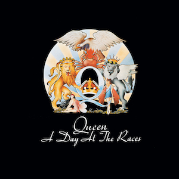
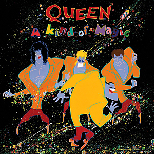

About The Band
Queen formed in 1971 and in 1973 signed their first recording contract for EMI. That year they released their first album, Queen. The same year saw their first major UK tour, and in 1974 they released Queen II as well as making their first UK headlining tour. They made their first US tour, and in November released Sheer Heart Attack which was a hit on both sides of the Atlantic.
1975 saw their new release, A Night At The Opera, and – significantly – the single Bohemian Rhapsody. At 5’ 55” it should have been too long for successful radio play but it became one of the greatest singles of all time, staying at No. 1 in the UK chart for nine weeks. The video, directed by Bruce Gowers, is credited with being the first genuine promotional video. The song has regularly featured in all major pop polls and was recently named again as the best single of all time. The success of A Night At The Opera was equally stunning, giving the band their first platinum album.
In 1976 they toured the US and Japan and by spring all four albums resided in the UK Top Twenty. Later that year they released A Day At The Races, and gave a free concert in Hyde Park to an estimated crowd of 200,000 fans. The album was a huge success, advance orders alone amounting to over 500,000. The following year saw two major US tours, the band’s sixth album, News Of The World and the legendary double A side single, We Will Rock You and We Are The Champions. - Queen Official Website
Meet The Members

Freddie Mercury
Vocals, keyboards
Brian May
Guitar, keyboards, vocals

Roger Taylor
Drums, guitar, keyboards, vocals

John Deacon
Bass, guitar, keyboards
Discography
-

Queen
1973 -

Queen II
1974 -

Sheer Heart Attack
1974 -

A Night at the Opera
1975 -

A Day at the Races
1976 -

News of the World
1977 -

Jazz
1978 -

The Game
1980 -

Flash Gordon (Original Soundtrack)
1980 -

Hot Space
1982 -

The Works
1984 -

A Kind of Magic
1986 -

The Miracle
1989 -

Innuendo
1991 -

Made in Heaven
1995